워드프로세서-(구-1급) (2008-05-04 기출문제)
1과목: 워드프로세싱 일반
1. 다음 중 문서 작성에 사용되는 글꼴(Font)에 대한 설명으로 옳지 않은 것은?
- 한글 Windows XP에서 글꼴을 추가하면 대부분의 워드프로세서에서 그 글꼴을 사용할 수 있다.
- 비트맵(Bit Map) 방식의 글꼴은 글자를 선이나 곡선으로 부드럽게 처리한 것으로 글자를 확대해도 매끄럽게 표현된다.
- 트루타입(True Type) 글꼴은 보이는 대로 출력이 되는 위지윅(WYSIWYG)을 지원한다.
- 트루타입(True Type)이 아닌 글꼴을 사용하는 경우 화면에 보이는 것과 다른 형태로 출력될 수 있다.
(정답률: 74%)

2. 다음 중 전자출판에서 자간의 미세 조정으로 특정문자들의 간격을 조정하는 기능은?
- 디더링(Dithering)
- 커닝(Kerning)
- 리터칭(Retouching)
- 리딩(Leading)
(정답률: 81%)
3. 다음 중 워드프로세서 용어에 대한 설명으로 옳지 않은 것은?
- 하드 카피(Hard Copy) : 화면에 보이는 내용을 종이에 인쇄하는 것을 의미한다.
- 소프트 카피(Soft Copy) : 문서의 내용을 화면에 출력하거나 디스크에 저장하는 것을 말한다.
- 피치(Pitch) : 인쇄할 때 문자와 문자 사이의 간격을 나타내는 단위로 1인치에 인쇄되는 문자수를 말한다.
- 레이아웃(Layout) :화면의 어느 위치에서든지 편집이 가능한 편집기를 말한다.
(정답률: 58%)
4. 다음 중 아래 그림에서 음영 처리된 영역의 명칭으로 옳은 것은?
- 각주
- 꼬리말
- 머리말
- 미주
(정답률: 73%)
5. 다음 중 문자 입력 방법에 대한 설명으로 옳지 않은 것은?
- 한글 입력 : 2벌식은 받침에 상관없이 글자를 풀어서 입력하며 3벌식은 초성, 중성, 종성을 구분하여 입력한다.
- 영문 입력 : 영문 입력상태에서 영문자를 입력하며 대/소문자의 입력은 [Caps Lock] 키나 [Shift] 키를 눌러 입력한다.
- 한자 입력 : 한자의 음(音)을 알아야만 입력이 가능하며 한글/한자 음절 변환, 단어 변환, 문장 자동변환 등으로 입력한다.
- 특수 문자 : 특수 문자 배열표(문자표)에서 해당 문자표를 선택한다.
(정답률: 77%)
6. 다음 중 컴퓨터 입력시 GIGO(Garbage In Garbage Out)와 관련 있는 사무 관리의 원칙은?
- 용이성
- 정확성
- 신속성
- 경제성
(정답률: 61%)
7. 다음 중 KS X 1001 한글 코드에 대한 설명으로 옳지 않은 것은?
- 조합형 코드는 한글 11,172자를 표현할 수 있다.
- 완성형 코드에서 한글을 표현할 때 16비트를 사용한다.
- 전 세계에서 사용하는 모든 문자의 표현이 가능하도록 만든 국제표준코드이다.
- 완성형 코드는 정보교환용 코드체계이다.
(정답률: 56%)
8. 다음 중 커서를 한 단어씩 이동시키려면 어떤 키를 눌러야 하는가?
- [Alt] + 좌우 방향키
- [Ctrl] + 좌우 방향키
- [Shift] + 좌우 방향키
- [Tab] 키
(정답률: 62%)
9. 다음 중 인쇄용 낱장 용지의 설명으로 옳지 않은 것은?
- 용지의 크기에 따라 A계열과 B계열로 나누어진다.
- A4가 A5보다 크다.
- A3보다 B3가 작다.
- A4 용지의 규격은 210mm * 297mm이다.
(정답률: 77%)
10. 다음 중 내용이 같은 초대장에 미리 준비된 받는 사람들의 이름 문자열을 사용하여 한꺼번에 여러 장 인쇄할 수 있는 기능은 무엇인가?
- 메일머지(Mail Merge)
- 스타일(Style)
- 하이퍼텍스트(Hypertext)
- 스풀링(Spooling)
(정답률: 84%)
11. 다음 중 매크로(Macro)에 대한 설명으로 옳지 않은 것은?
- 사용자가 입력하는 순서를 기록해 두었다가 바로 가기 키 조작으로 재생 가능하다.
- 반복적인 작업을 빠르고 효율적으로 할 수 있다.
- 매크로는 별도의 파일로 저장할 수 없다.
- 특정 문구의 반복이 가능하기 때문에 복사 및 붙이기 등을 대체하여 사용할 수 있다.
(정답률: 76%)
12. 다음 보기의 용어들과 관계가 깊은 것은 어느 것인가?
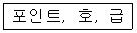
- 글꼴의 크기단위
- 화면의 구성단위
- 문서의 분량단위
- 파일의 구분단위
(정답률: 81%)
13. 다음 중 복사(Copy)나 잘라내기(Cut)를 한 후 워드프로세서 프로그램을 종료하고 다른 작업을 수행하지 않았을 경우에 대한 설명으로 옳지 않은 것은?
- 일반적으로 프로그램을 종료하면 복사하거나 잘라낸 내용이 사라지므로 붙여넣기 할 수 없다.
- 복사하거나 잘라내기 한 내용은 클립보드에 저장된다.
- 다른 종류의 워드프로세서 프로그램을 실행하여 복사하거나 잘라내기 한 내용을 붙여넣기 할 수 있다.
- 복사하거나 잘라낸 내용은 컴퓨터를 재부팅한 후 프로그램을 다시 실행하여 붙여넣기 할 수 없다.
(정답률: 59%)
14. 다음 중 전자출판 기술의 하나인 하이퍼링크의 구조적 특징이 아닌 것은?
- 다양성으로 인하여 정보 습득 능력이 고조된다.
- 순차적 접근 방식을 주로 제공함에 따라 이용 상의 편리가 증대된다.
- 이용자의 의도된 선택에 따라 이동이 가능하다.
- 양방향 네트워크 통신을 이용자에게 제공된다.
(정답률: 50%)
15. 다음 중 문서의 보존기간에 포함되기 시작하는 날은?
- 문서 완결한 날의 다음해 1월 1일
- 문서 기안한 해의 1월 1일
- 문서 시행일
- 문서 기안일
(정답률: 56%)
16. 다음 중 공문서의 발송에 대한 설명으로 옳지 않은 것은?
- 문서는 처리과에서 발송하되 우편을 이용하여 발신함을 원칙으로 한다.
- 인편 또는 우편으로 발송하는 문서는 문서과의 지원을 받아 발송할 수 있다.
- 전자문서의 경우에는 별도의 시행문을 작성하지 아니하고 결재한 문서를 시행문으로 변환하여 시행한다.
- 행정기관의 장은 공문서를 수발함에 있어 문서의 보안유지와 분실, 훼손 및 도난방지를 위한 조치를 강구하여야 한다.
(정답률: 55%)
17. 다음 중 마우스로 영역(블록)을 지정하는 방법으로 옳지 않은 것은?
- 한 단어영역 지정 : 해당 단어 앞에서 마우스 포인터를 놓고 세 번 클릭한다.
- 한 줄 영역 지정 : 해당 줄의 왼쪽 끝에서 마우스 포인터를 이동하여 포인터가 화살표로 바뀌면 클릭한다.
- 문단 전체 영역 지정 : 해당 문단의 왼쪽 끝으로 마우스 포인터를 이동하여 포인터가 화살표가 바뀌면 두 번 클릭한다.
- 문서 전체 영역 지정 : 문단의 왼쪽 끝으로 마우스 포인터를 이동하여 포인터가 화살표로 바뀌면 세 번 클릭한다.
(정답률: 58%)
18. 다음 보기의 내용은 워드프로세서 용어에 대하여 설명한 것이다. 다음 중 옳지 않은 항목만을 모두 나열한 것은?
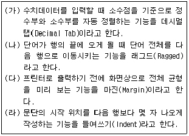
- (가), (나)
- (다), (라)
- (나), (다), (라)
- (가), (나), (다), (라)
(정답률: 52%)
19. 다음 중 문서의 분량이 증가할 가능성이 있는 교정부호들로만 올바르게 짝지어진 것은?
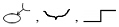
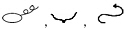
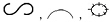
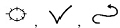
(정답률: 84%)
20. 다음 중 교정부호 사용 시 유의할 점에 대하여 설명한 것으로 옳지 않은 것은?
- 교정부호를 표시하는 색은 눈에 잘 띄게 한다.
- 교정부호는 지정한 부호를 사용해서 교정한다.
- 한 번 교정된 부분은 다시 교정할 수 없다.
- 교정부호가 너무 복잡하거나 난해하지 않도록 한다.
(정답률: 83%)
2과목: PC 운영 체제
21. 다음 중 한글 Windows XP에서 제공하는 [즐겨찾기] 기능에 관한 설명으로 옳지 않은 것은?
- [즐겨찾기] 내용을 추가하거나 구성을 변경하면 레지스트리의 내용이 변경된다.
- [즐겨찾기]는 Windows 사용자 별로 각각 관리된다.
- 인터넷에서 자주 방문하는 URL을 [즐겨찾기]에 추가하면 편리하다.
- [즐겨찾기]는 Windows 탐색기, 인터넷 익스플로러에서 공통으로 사용이 가능하다.
(정답률: 49%)
22. 다음 중 한글 Windows XP에서 사용할 수 있는 IEEE1394 장치에 대한 설명으로 옳은 것은?
- 사운드 장치의 국제적인 표준이다.
- 무정전 전원 공급 장치 규격의 국제적인 표준이다.
- 디지털 비디오 또는 디지털 오디오 편집 장치와 같은 고속 직렬 장치에 대한 표준이다.
- 플러그 앤 플레이를 지원하는 외부 병렬 버스이다.
(정답률: 51%)
23. 다음 중 한글 Windows XP에서 [도움말 및 지원] 기능에 관한 설명으로 옳지 않은 것은?
- 검색과 색인 기능을 이용하여 검색한 도움말을 인쇄할 수 있다.
- 도움말 최신 기능인 시스템 모니터를 이용하면 시스템의 효율성을 실시간으로 검사할 수 있다.
- 문제 해결사를 이용하여 네트워크, 디스플레이, 하드웨어 충돌 등의 다양한 문제점에 대한 해결 방법을 찾을 수 있다.
- 인터넷을 통해 제공되는 추가 도움말 기능을 이용하거나 원격 지원을 사용하여 컴퓨터의 문제를 해결할 수 있다.
(정답률: 50%)
24. 한글 Windows XP의 C 디스크 드라이브(C:) 등록정보 창에서 설정할 수 있는 [디스크 할당량]에 관한 설명으로 옳지 않은 것은?
- 새 사용자에 대한 기본 할당량 한도를 설정할 수 있다.
- 할당량 한도를 넘은 사용자에게 디스크 공간을 주지 않도록 설정할 수 있다.
- 사용자가 할당량 한도를 넘었을 때 이벤트를 기록하도록 설정할 수 있다.
- 디스크 할당의 최대 크기는 각 드라이브의 백분율로 설정할 수 있다.
(정답률: 37%)
25. 한글 Windwos XP에서 [시스템 등록정보] 창의 [장치 관리자]에 관한 설명으로 옳지 않은 것은?
- [장치 관리자] 창에서 노란색의 ‘?’ 표시가 붙은 장치를 클릭하면 정상적으로 설치된 장치의 도움말을 표시할 수 있다.
- [장치 관리자] 창에서 시스템에 장착된 모든 하드웨어의 상태를 점검할 수 있다.
- [장치 관리자] 창에서 설치된 하드웨어의 드라이버를 업데이트할 수 있다.
- [장치 관리자] 창에서 설치된 하드웨어를 제거할 수 있다.
(정답률: 47%)
26. 다음 중 한글 Windows XP에서 [명령 프롬프트] 창에 관한 설명으로 옳지 않은 것은?
- [명령 프롬프트] 창에서는 MS-DOS 명령어를 사용하여 컴퓨터를 운영할 수 있다.
- [명령 프롬프트] 창을 종료하려면 [Esc] 키를 누른다.
- [명령 프롬프트] 창을 화면 전체로 확대하거나 원래 크기로 조정하려면 [Alt]+[Enter] 키를 사용한다.
- 사용자의 ID가 “korea'라면 [명령 프롬프트] 창의 초기 설정 디렉터리는 ‘C:\Documents and Settings\korea'이다.
(정답률: 40%)
27. 한글 Windows XP에서 문서 편집기인 [메모장] 프로그램에 관한 설명으로 옳지 않은 것은?(문제 오류로 실제 시험장에서는 2, 4번이 정답 처리 되었습니다. 여기서는 2번을 정답 처리 합니다.)
- HTML 문서를 작성할 수 있다.
- 글꼴의 색상이나 크기를 지정할 수 있다.
- 인쇄 시 [페이지 설정]을 통해 머리글과 바닥 글을 넣을 수 있다.
- 문서를 ASCII 형식의 텍스트로만 저장할 수 있다.
(정답률: 78%)
28. 한글 Windows XP에서 폴더 창에 있는 파일의 이름을 변경하려고 할 경우에 대한 설명으로 옳지 않은 것은?
- 해당 파일을 선택한 후에 [F2] 키를 누르고 새 이름을 입력한 후 [Enter] 키를 누른다.
- 해당 파일을 선택한 후에 폴더 창 [파일] 메뉴의 [이름 바꾸기]를 선택하고 새 이름을 입력한 후 [Enter] 키를 누른다.
- 해당 파일을 선택한 후에 바로 가기 메뉴에서 [이름 바꾸기]를 선택하고 새 이름을 입력한 후 [Enter] 키를 누른다.
- 해당 파일의 등록정보 창에서 [이름 바꾸기] 탭을 선택하고 새 이름을 입력한 후 [Enter] 키를 누른다.
(정답률: 46%)
29. 한글 Windows XP에서 공유할 드라이브나 폴더의 등록정보 창에서 공유와 관련된 설정 내용으로 옳지 않은 것은?
- 네트워크 상에서 검색할 때 공유할 자원의 이름에 대한 설정
- 네트워크 사용자가 내 파일을 변경할 수 있음
- 공유할 폴더를 공유 문서로 끌어넣기 설정
- 공유할 파일의 형식에 대한 설정
(정답률: 33%)
30. 한글 Windows XP의 [제어판]에 있는 [마우스]를 선택하여 나타나는 [마우스 등록정보] 창에서 수행할 수 있는 작업이 아닌 것은?
- 왼손잡이를 위한 단추 설정을 할 수 있다.
- 두 번 클릭 속도를 조정할 수 있다.
- 포인터의 이동 자취를 표시할 수 있다.
- 포인터의 움직임 기능을 해제할 수 있다.
(정답률: 52%)
31. 한글 Windows XP에서 바탕 화면에 있는 바로 가기 아이콘에 대한 설명으로 옳지 않은 것은?
- 바로 가기 아이콘의 확장자는 LNK이다.
- 파일이나 폴더뿐만 아니라 네트워크상의 다른 컴퓨터에 대해서도 작성할 수 있다.
- 등록정보를 이용하여 원본을 다른 개체로 변경할 수 있다.
- 동일한 원본 파일이나 폴더에 대한 바로 가기 아이콘은 모두 동일한 이름을 가져야 한다.
(정답률: 66%)
32. 다음 중 한글 Windows XP에서 프린터의 설치에 관한 설명으로 옳지 않은 것은?
- [프린터 및 팩스] 창에서 [파일] 메뉴의 [프린터 추가]를 선택하여 [프린터 추가 마법사] 창이 나타나면 순서에 따라 프린터를 추가한다.
- 프린터는 최대 10대까지만 설치할 수 있으며, 처음 설치한 프린터가 기본 프린터가 된다.
- 기본 프린터의 변경은 해당 프린터의 인쇄 관리자 창에서 [프린터] 메뉴의 [기본 프린터로 설정] 항목을 선택하면 된다.
- 사용 중인 컴퓨터에 직접 연결된 프린터는 로컬 프린터로 설치한다.
(정답률: 69%)
33. 한글 Windows XP에서 다음 보기의 내용은 무엇에 대하여 설명한 것인가?
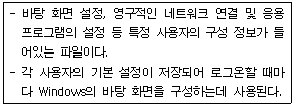
- 사용자 프로필
- 내 컴퓨터
- 암호
- 사용자 계정
(정답률: 35%)
34. 다음 중 한글 Windows XP의 [탐색기] 창에서 수행할 수 없는 작업은?
- 컴퓨터 시스템의 로그오프를 할 수 있다.
- 삭제된 파일이 있는 휴지통을 비울 수 있다.
- [제어판]에 포함된 내용을 사용할 수 있다.
- 파일이나 폴더의 복사나 이동을 할 수 있다.
(정답률: 51%)
35. 한글 Windows XP에서 [제어판]의 [내게 필요한 옵션] 창에 관한 설명으로 옳지 않은 것은?
- 신체적으로 시각 또는 청각 장애가 있는 사용자를 위해 제공하는 기능을 설정할 수 있다.
- 하나의 키로 두 가지 기능을 하는 키를 누를 때 신호음이 발생하도록 하는 필터 키를 설정할 수 있다.
- Windows의 여러 효과음이 발생하는 상황에서 현재 상황을 소리 대신 메시지나 아이콘으로 알려주는 기능을 설정할 수 있다.
- 키보드의 숫자 키패드로 마우스 포인터를 움직일 수 있도록 설정할 수 있다.
(정답률: 36%)
36. 한글 Windows XP에서 [디스크 조각 모음]을 실행한 후 [분석 보고서] 창의 볼륨정보에 표시되지 않는 내용은?
- 볼륨의 크기
- 조각된 총 비율
- 잘못된 섹터 공간
- 총 파일 수
(정답률: 48%)
37. 한글 Windows XP에서 [Windows 탐색기] 창의 [도구] 메뉴에 있는 [동기화]는 오프라인에서 사용되는 파일이 네트워크상의 파일과 일치하도록 하는 것이다. 다음 중 설정 방법에 대한 설명으로 옳지 않은 것은?
- 로그온 또는 로그오프 할 때 동기화 항목을 지정할 수 있다.
- 사용자 컴퓨터가 일정시간 유휴 상태일 때 동기화하려는 항목을 지정할 수 있다.
- 동기화 작업을 사용자 일정에 추가하거나 기존 작업을 제거 및 편집하는 등의 예약기능이 있다.
- 시스템 대기 모드 시간에 네트워크 내의 변경 사항을 동기화할 수 있다.
(정답률: 39%)
38. 한글 Windows XP에서 임의의 폴더 창에 있는 파일들을 선택하는 방법으로 옳지 않은 것은?
- 연속적인 파일을 선택할 때는 [Ctrl] 키를, 비연속적인 파일을 선택할 때는 [Shift] 키를 이용한다.
- 마우스를 드래그하여 사각형 모양의 상자를 만들면 그 사각형 상자 안의 파일이 선택된다.
- 파일 전체를 선택할 때는 [편집] 메뉴의 [모두 선택] 또는 [Ctrl]+[A] 키를 누른다.
- 하나의 파일을 선택할 때는 마우스 왼쪽 단추를 이용하여 해당 파일을 한번 클릭한다.
(정답률: 66%)
39. 한글 Windows XP에서 [검색 결과] 창의 파일이나 폴더 검색에 관한 설명으로 옳지 않은 것은?
- 파일이나 폴더의 읽기 전용 또는 숨김 등의 특성을 조건으로 검색할 수 있다.
- 바뀐 날짜의 이전 몇 일 이라는 조건으로 검색할 수 있다.
- 포함하는 문자열을 조건으로 검색할 수 있다.
- 파일 크기의 조건으로 검색할 수 있다.
(정답률: 40%)
40. 다음 중 한글 Windows XP에서 인터넷 사용에 관한 설명으로 옳지 않은 것은?
- 인터넷을 사용하기 위해서는 TCP/IP 프로토콜이 설치되어 있어야 한다.
- 외부 네트워크에 접근할 수 있도록 게이트웨이를 지정하여야 한다.
- Windows XP는 기본적으로 FTP 서버, 메일 서버 등의 기능을 제공한다.
- Windows XP를 설치하면 FTP, TELNET과 같은 인터넷서비스를 사용할 수 있다.
(정답률: 35%)
3과목: 컴퓨터 및 정보활용
41. 다음 중 컴퓨터 시스템 침입 기법으로 볼 수 없는 것은?
- 프록시(Proxy) 기법
- 스택 오버플루우(Stack Overflow) 기법
- 백도어(Back Door) 기법
- 포맷 스트링(Format String) 기법
(정답률: 39%)
42. 다음 중 보기의 ( ) 안에 들어갈 용어가 순서대로 올바르게 나열된 것은?
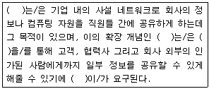
- 인터넷, 인트라넷, VPN(가상사설망), 전자서명
- 인트라넷, 엑스트라넷, VPN(가상사설망), 보안
- 인트라넷, 인터넷, 라우터, 암호화
- 인트라넷, 인터넷, 라우터, 전자서명
(정답률: 64%)
43. 다음 중 정지 이미지 데이터의 압축 방식으로 사용자의 요구에 따라 압축 정도를 지정할 수 있는 방식은?
- MPEG
- IPEC
- JPEG
- APEC
(정답률: 65%)
44. 다음 중 화면 보호 프로그램(Screen Saver)의 주된 목적은 무엇인가?
- 브라운 아웃(Brownout) 방지
- 번인(Burn-in) 방지
- 스크린 플리커링(Flickering) 방지
- 서지(Surge) 방지
(정답률: 48%)
45. 다음 중 “트로이 목마” 형태의 프로그램 특징으로 보기 어려운 것은?
- 지속적으로 사용자 컴퓨터에서 정보를 유출하거나 컴퓨터를 원격 제어한다.
- 정상적인 프로그램으로 위장하여 사용자 컴퓨터에 설치되어 실행된다.
- 컴퓨터 사용자가 트로이 목마의 침입을 인식할 수 없도록 하기 위해 자기복제 기능을 사용한다.
- 바이러스나 웜처럼 직접 컴퓨터에 피해를 주는 것이 아니므로 사용자가 트로이 목마에 대한 감염사실을 인식하기 어렵다.
(정답률: 45%)
46. 다음 중 운영체제의 목적과 관련된 용어들에 대한 설명으로 옳지 않은 것은?
- 일정한 시간동안 시스템이 처리할 수 있는 일의 양을 CPU 사용률이라 한다.
- 사용자가 컴퓨터에 일을 지시하고 나서 그 결과를 얻는데 까지 소요되는 시간을 응답 시간이라 한다.
- 컴퓨터를 사용하고자 할 때 신속하게 사용할 수 있는 정도를 사용 가능도라 한다.
- 주어진 문제를 정확하게 해결하고 작동하는 정도를 신뢰도라 한다.
(정답률: 45%)
47. 다음 중 넷스케이프, 마이크로소프트사 등이 연합하여, 신용카드를 안전하게 웹에서 사용할 수 있도록 하는 지불 프로토콜을 나타내는 것은?
- SSL
- SEA
- SET
- PGT
(정답률: 48%)
48. 다음 중 웹브라우저에서 사운드, 비디오와 같은 멀티미디어 요소들을 다운로드받으면서 재생해주는 기술을 무엇이라 하는가?
- Striping
- Streaming
- Caching
- Watermarking
(정답률: 72%)
49. 다음 중 이미 출시된 프로그램에 존재하는 오류를 수정하기 위하여 일부 파일을 변경해 주는 프로그램을 무엇이라 하는가?
- Freeware
- Patch
- Shareware
- Alpha Version
(정답률: 65%)
50. 다음 중 웹 문서관련 표준과 가장 거리가 먼 것은?
- ODA
- SGML
- XML
- GKS
(정답률: 47%)
51. 다음 중 중앙처리장치(CPU)에서 명령어를 처리하는 과정을 순서대로 올바르게 나열한 것은?
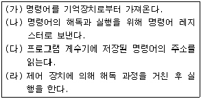
- (가)→(나)→(다)→(라)
- (나)→(가)→(다)→(라)
- (다)→(가)→(나)→(라)
- (가)→(다)→(나)→(라)
(정답률: 34%)
52. 다음 중 보기의 특성을 갖는 통신망의 구조는 어느 것인가?
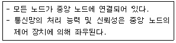
- 링(ring) 형
- 버스(bus) 형
- 트리(tree) 형
- 스타(star) 형
(정답률: 50%)
53. 다음 중 멀티미디어 저작도구에 대한 설명으로 옳지 않은 것은?
- 사용자의 입력에 따라 요소들의 제어흐름을 조정할 수 있는 기능이 있다.
- 미디어 파일들 간의 동기화 정보를 통하여 요소들을 결합하여 실행하는 기능이 있다.
- 저작도구 사용 시 멀티미디어 요소를 결합하기 위해 대부분 C 나 C++ 등의 프로그래밍 언어를 이용한다.
- 다양한 미디어 파일이나 미디어 장치를 유연하게 연결할 수 있다.
(정답률: 61%)
54. 다음 중 최초로 실질적인 32bit 처리를 시작한 프로세서는?
- 8088
- 80286
- 80386
- 8⑤86
(정답률: 47%)
55. 다음 보기는 운영체제의 계층에 대한 설명이다. 다음 중 하위 계층부터 순서대로 올바르게 나열한 것은?
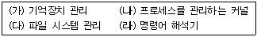
- (가), (나), (다), (라)
- (나), (가), (다), (라)
- (가), (나), (라), (다)
- (나), (가), (라), (다)
(정답률: 41%)
56. 다음 중 3초과 코드(excess 3 code)에 대한 설명으로 옳지 않은 것은?
- 보수를 간단히 얻을 수 있는 장점이 있다.
- 2421 코드와 동일한 값을 갖는다.
- 8421 코드에 3을 더한 코드이다.
- 10진수로 5는 3초과 코드로 1000이다.
(정답률: 45%)
57. 다음 보기에 메모리 계층을 속도가 빠른 것부터 느린 것 순으로 올바르게 나열한 것은?
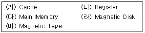
- (가)→(나)→(다)→(라)→(마)
- (나)→(가)→(다)→(라)→(마)
- (가)→(다)→(나)→(마)→(라)
- (다)→(가)→(나)→(라)→(마)
(정답률: 59%)
58. 다음 중 데이터통신시스템에서 데이터 전송계를 구성하는 기본 요소들과 가장 거리가 먼 것은?
- 데이터 통신시스템과 외부 환경과의 접속점에 위치하는 단말장치
- 데이터 전송회선과 단말장치 사이에 위치하여 이들을 결합하기 위한 통신제어장치
- 데이터를 처리하는 중앙처리장치와 처리된 결과를 저장하는 출력장치
- 단말장치 상호 간을 연결하여 주는 데이터 전송회선
(정답률: 53%)
59. 다음 중 전송매체 중 광케이블에 대한 설명으로 옳지 않은 것은?
- 건물 내의 근거리 통신망을 구성할 때 저렴하게 이용한다.
- 대역폭이 넓어 데이터의 전송률이 뛰어나므로 데이터 손실이 적다.
- 리피터의 설치 간격이 넓어 가입자 회선으로 이용한다.
- 다른 전송매체보다 크기가 작고 가벼우며 충격이나 잡음이 적다.
(정답률: 53%)
60. 다음 중 직접 액세스 저장장치로서 널리 사용되고 있는 하드디스크에 대한 설명으로 옳지 않은 것은?
- 디스크의 각 기록 표면에 동심원을 이루고 있는 원형의 기록 위치를 트랙이라고 한다.
- 디스크의 중심축으로부터 동일한 거리에 위치하고 있는 트랙들의 모임을 디스크 팩이라고 한다.
- 하나의 트랙은 여러 개의 섹터로 나누어진다.
- 하드디스크는 직접처리 또는 임의처리가 가능하다.
(정답률: 49%)
비트맵 방식의 글꼴은 글자를 픽셀 단위로 저장하며, 확대할 경우 픽셀이 늘어나면서 깨지거나 계단 현상이 발생할 수 있다. 따라서 품질이 떨어지는 단점이 있다. 이에 비해 트루타입 글꼴은 벡터 기반으로 저장되어 확대해도 깨지지 않고 부드럽게 표현된다.